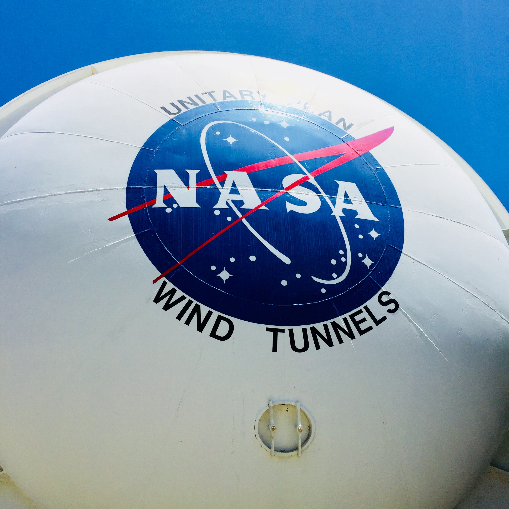
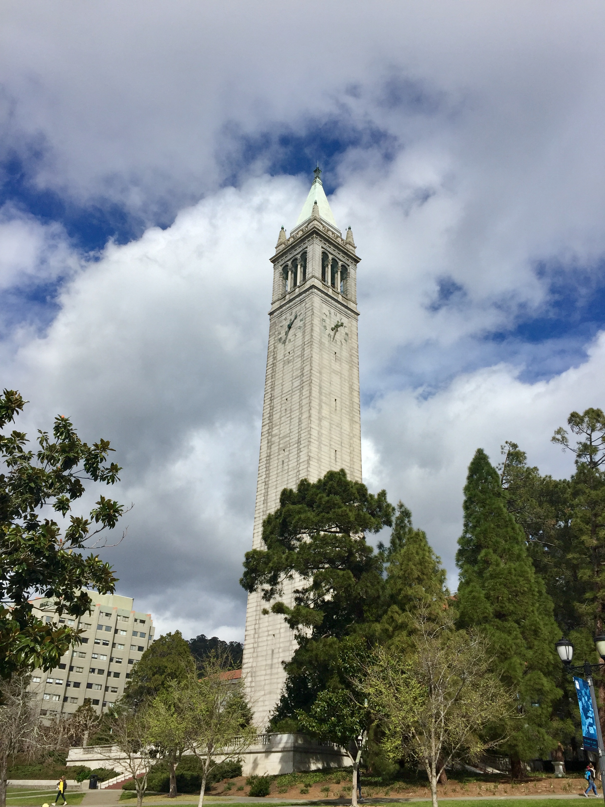
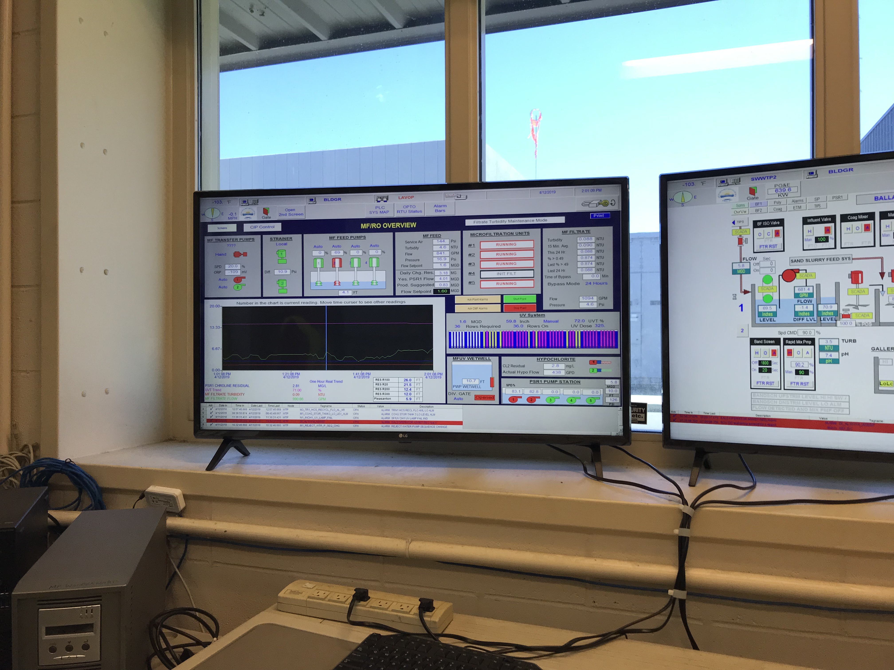
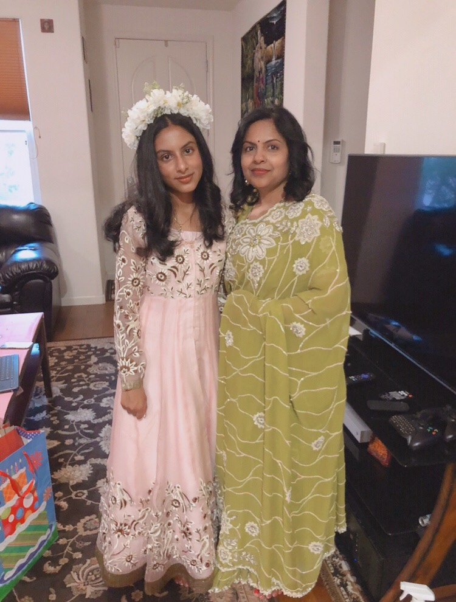

Welcome to my work experince page! Scroll down to learn more about the volunteer experiences I have partaken in, the Field Trips I have gone on, and Influential Speakers that have occurred during my engineering journey. Although my current goal is to become an electrical engineer, I am always open to new fields of engineering and willing to learn from them to broaden my knowledge.
Field Trips
Nasa Ames Research Center 6/5/18
The first field trip I would like to talk about is when I visited the NASA Ames Research Center. My class and I had gone into the wind tunnels in there and viewed how gargantuan they were. Then we also visited a few of their laboratories and computer rooms. I learned a lot about the simulations that NASA performs in their wind tunnel for many different types of vehicles. Throughout the whole tour we had a tour guide who explained to us the sites we were visiting. This trip was memorable as it was inspiring to see the functionality of technology used in NASA, to learn about aerospace engineering, and the importance of simulations.

UC Berkley 10/20/18
My second influential field trip was visiting UC Berkeley. In this field trip, we learned a lot about the Etta Kappa Nu club and branch in UC Berkeley. We were guided by two college students throughout the tour who showed us the building, their accomplishments, and told us a bit of history. They also assisted us in the activities we did, such as helping us with our code to turn on and off the LED and building our circuit. I learned the basics of the LED such as the anode and cathode and how to align the LED properly in a breadboard. This trip was highly memorable, as UC Berkeley is an exceptional college, and to be able to take a tour of it was amazing.

Waste Center 4/12/19
In this tour we learned about the waste center in Pleasanton. It was interesting to learn in the process that happens behind the scenes every day to process the waste produced by the Alameda County. We were also able to discuss controversial topics such as the repuposing of waste water into drinking water. Overall, it was fascinating to learn about the chemical processes and vast amount of engineering required to correctly dispose of waste.

Stanford and Computer Science Museum 11/14/18
I had taken a fieldtrip to tour Stanford and visited the Computer Science Museum the same day. We had learned about the Stanford Campus and the facilities that Stanford can provide from academics of extracurriculars. For the second half of the day, we went to the Computer Science Museum. There I was able to grasp a deeper knowledge into the history of technology. I was able to analyze old typewriters, experiment with census tabulators and interact with previous arcade games.
Lawrence Livermore Laboratory 11/19/19
This fieldtrip was a tour of the inside of the laboratory. We were able to touch all aspects of engineering, from electrical, to computer science, and even chemical engineering. Our guide gave us detailed information of this history of the laboratory and how the aspects of engineering go hand in hand to run the facility. The tour was ended with a more closer look at the lenses that are used to magnify the lasers. Hopefully, in the future I will be able to vist the laboratory again to have a closer look at all of its mechanics.
Influential Speakers
Aaron Pomerantz
In this talk, I learned about how technology and the environment can co-exist in may ways. I was informed about how recent technology is being used to further discover more things about the environment. This talk was especially influential on me, as it introduced me to a new work in where I could, too, possibly use technology to learned new things about the environment or help it, instead of the typically world view that technology hurts nature. He demonstrated very interesting biological facts such as the butterly with invisible wings and allowed us to interact with the multitude of non-invasive technologies they use to survey the environment around them without harming it. This talk has broadened by interest into the field of environmental engineering.
Manard Holliday
A prestigious man who had worked under Obama had came in our engineering class to talk to us about artificial technology. He have us a bit of insight on how artificial technology worked, and how useful it was for the real world. Then he showed us examples of where we are in the artificial technology field today. Now, this was the part that left the biggest impact on me, because I had never known we had reached so far. It also helped destroy the image that robots are violent machines that are going to end humanity. Instead, this presentation showed a more realistic view of all the lives robots can save and the benefits they have for humanity, which is very inspiring and hopeful for the future, as well as opening my eyes to the world of artificial intelligence.
Rick Hightowers
Rick Hightowers is an app developer who explained his process in app development and server manegment. He explained his troubles he ran into while creating apps for the NFL, specifically how to manage the large groups of people who were logging onto the app. There was the constraint of trying to make the application as efficient as possible to handle large crods but still be cost effective. He described he scruitiny he faced in wanting to try different servers to lower the amount, with people beliving that those serves would not owkr. He talked about his sucesses and failures, eventually creating an app with his team that was able to perform as desired. Learning of this expereince has really opened my eyes to the world of app development as I had never really taken into account that to create an app, the functionality is not only the importnat part, but also eth effeicincy in how many people the app can handle at once. I will be sure to keep these lessons in mind for creating apps in the future.
My Mentors
My mother is my mentor. She introduced me to a world of creativity, and always motivated me to push my borders in order to succeed. I learned from her the importance or being able to think of creative solutions and she was the one who had also fostered my interest in making what I see around me, leading me to want to become an engineer. My mother is a self-hired tailor, and has taught me independence and self-reliance through watching her work every day and constantly meet new dealines. I learned from her dedication towards a project and personal goals, as well as persistence and to never give up, no matter what challenge I am given.

The Mentorship Program
2019-2020
This year I am very grateful to participate in my schools mentorship program. This program has provided me to opportunity to network with people in the multitude of different fields of engineering. I have aquired everything from college advice to practice in real world applications. I would also like to give thanks to Ninand Desai, who is my mentor is this program and has also become a mentor in my life. She has assited me in how to present myself in the professional world. Her criticism and support has clarified the goal I have set for myself and what else I need to do achieve my goals. By imparting her experience in the field of engineering to me, I am more prepared on what to expect as I delve into the field myself.
Volunteer Experience
E-book Helper
Assisted seniors in how to use apps such as Libby, Overdrive, and RB digital to manage digital books. Continuously learned new ways to troubleshoot applications and was not afraid to do more research at the moment to learn more about the device and determine why it was not working.
Engineering Peer Tutor
ided peers in comprehending engineering concepts during lunch regularly. Required critical thinking in determining why a device was not working and an open mind to experiment with many possible solutions.
Leadership Experience
Save Earth Club
President of the Save Earth Club. Self-established club. Responsible for organizing and leading the meetings as well as creating presentation, managing fundraisers, and creating the website. Being president required responsibility to ensure that the club was meeting to goals desired and that I maintained communication with the members, the boardd, and our club advisor.
Dance Assistant
Co-led classes and instructed children ages 5-10 years old in classical dance. Many times I would interact with students individually to rpvide an personal attention in order to supplement their learning and ensure that they do not fall behind compared to the other students.